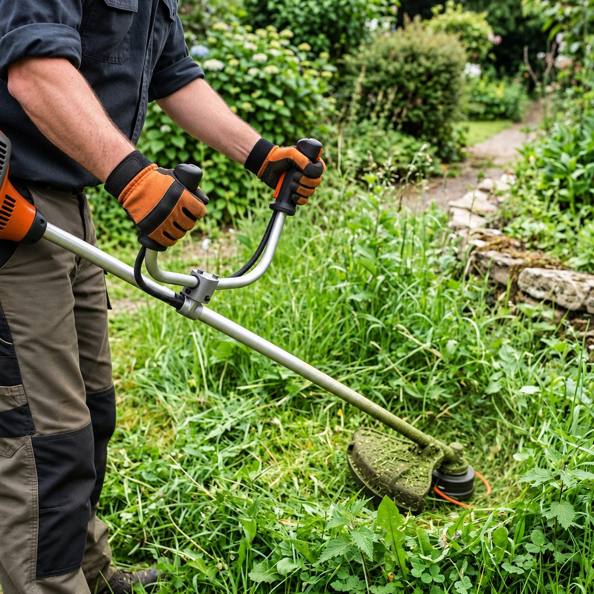
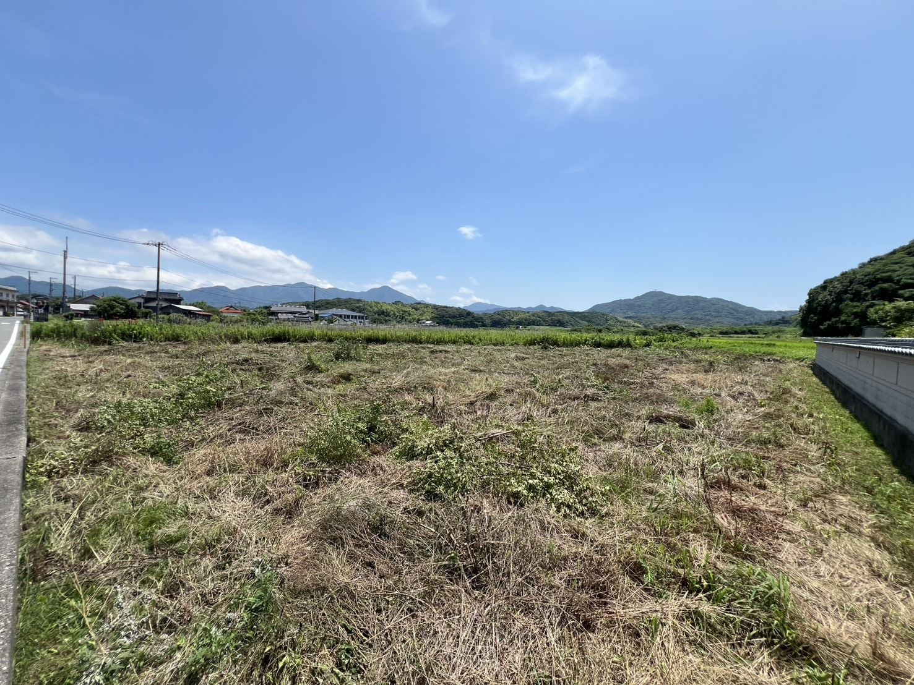
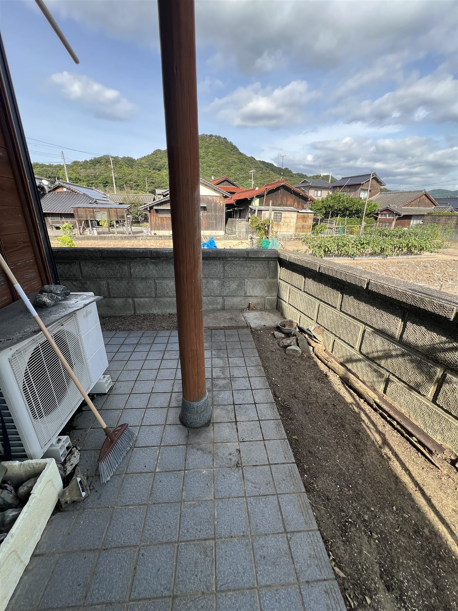

伸び放題のお庭の草、
すっきり綺麗にします。
お庭・空き地・駐車場・畑など。草むしりから広範囲の機械刈り、効果が長持ちする除草剤散布まで、親切丁寧に対応します。

こんなお悩み、ありませんか？
- お庭や空き地の草が伸び放題で、手が付けられない…
- 暑い時期や虫が多い中の草刈りは、体力的にもきつい…
- 近所迷惑になっていないか心配…
そんなお悩みは、地域密着の「とよサポ」へご相談ください。
草むしりから機械刈り、除草剤散布までまとめてお引き受けします。
選べる2つの除草対策

プロの機材と手作業で、
スピーディーに解決
- とにかく早く、広範囲の草をすっきり綺麗にしたい方
- 自分で草刈り機を使用するのが不安・危険と感じる方
- 刈った草の袋詰めから処分まで、全てまとめて任せたい方
お庭、空き地、駐車場、畑など、場所や状況に応じた最適な方法で草刈りを行います。広範囲の場所は刈払機（草刈り機）を使用して手早く綺麗に仕上げます。機械が入らない狭い隙間や、花壇の周り、根深くしつこい雑草などは、一本一本丁寧に手作業で草むしりを行います。
刈り取った草の回収・処分もお任せください。草刈りで一番大変なのが「刈った草の処分」です。刈り取った草の集積、袋詰め、処分用トラックへの積み込み・搬出まで全て対応いたします。お客様が後片付けをする必要は一切ありません。

根まで枯らし、
新しい草の発生を長期間ストップ
- 草刈りをしても、すぐにまた新しい草が生えてきてしまう方
- 砂利敷きの駐車場や空き地を長期間綺麗な状態に維持したい方
- 年間を通じた草むしりの回数や手間を劇的に減らしたい方
草刈り後に除草剤を適切に散布することで、残った根までしっかりと枯らし、新しい雑草が生えてくるのを長期間（数ヶ月間）抑制できます。
とよサポでは、葉っぱや茎から吸収されて根っこまでしっかり枯らす、液状タイプの薬剤を使用しています。この薬剤は、土に落ちると自然の成分に分解されるため、土壌や近くの川などを汚染することがなく、環境や周囲の生き物にもとても優しい安心なものです。お客様の環境に合わせて、丁寧で効果的な散布を行います。
草刈りとの併用がおすすめです
草が伸びている状態でそのまま除草剤をまくだけでは、枯れた後の草がそのまま残ってしまい見栄えが悪くなります。一度草刈りを行ってすっきりさせた後に除草剤を散布することで、美観を最も長く保つことができます。
料金のご案内
※上記は標準的な広さにおける料金の目安です。お庭の広さ、傾斜の有無、草の丈や密度によって正確な料金が変わります。
※お見積りは無料ですので、まずはお気軽にご相談ください。
※現地調査が必要な場合は3,300円（税込）がかかります。ただしご成約の場合は費用は発生致しません。
※下関市内は出張費（エリア料金）無料です。 その他の詳しい料金表を見る
ご利用の流れ
- 1
お問い合わせ
お電話またはLINEにて、「草刈りの見積りをしてほしい」とご連絡ください。ご希望のスケジュールなどを伺います。
- 2
現地調査・お見積り
担当スタッフが直接お庭を確認し、正確なお見積りをご提示します（お見積りは無料ですが、現地調査が必要な場合は3,300円がかかります。ただしご成約の場合は費用は発生致しません）。
- 3
丁寧な作業実施
お見積りにご納得いただけましたら、作業日を決定し、安全管理を徹底した上で丁寧に作業を行います。
- 4
仕上がり確認・お支払い
作業が完了しましたらお客様に仕上がりをご確認いただき、問題がなければお支払い（現金または各種決済）となります。
写真を送るだけで、おおよその金額をお伝えします
お庭や空き地の写真をLINEで送ってください。相談だけでも大歓迎です。